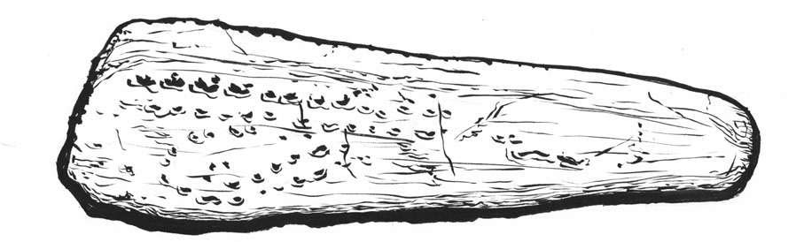
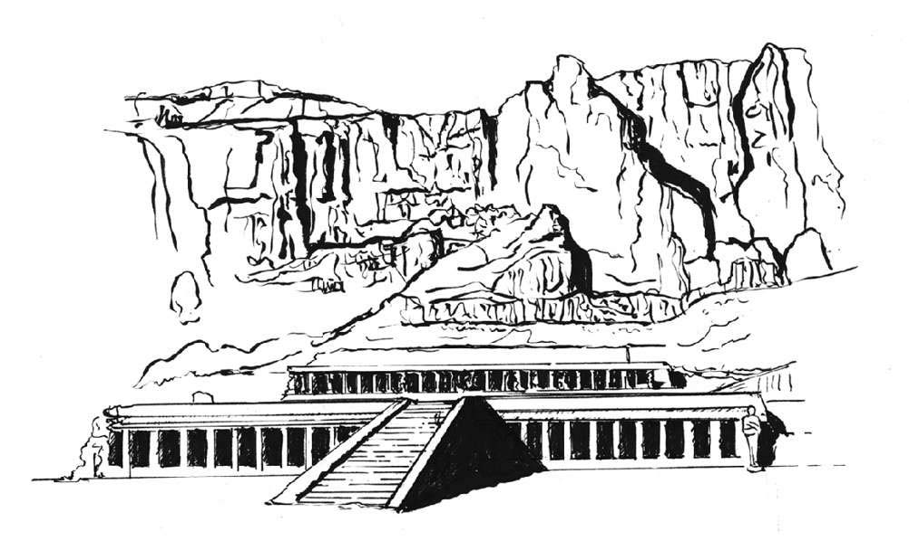

不同文化在不同时期发明了不同的历法，并使用了多种标记和测量方法，但总体而言不外乎两种：阴历和阳历。
月亮绕地球一周需29.53天，阴历的1年需要月亮环绕地球12周或12个太阴月，总共需要354.36天。阳历1年等于地球环绕太阳一周的时间，需要365.25天。
两种历法中，用月亮来标记时间相对简单，因为夜空中会规律性出现满月。所以，在人们想要计算一下一整年到底有多长之前，阴历被使用了很长时间。
在法国西南部多尔多涅河谷的山洞中，人们曾发现了一件工艺品，被认为是最早的有形日历，距今已3万年之久。它是鹰翼上的一小块骨头，刻有规律性的痕迹，这些刻痕共14—15组，总共29行到30行。

发现于法国多尔多涅河谷的阿布里·布朗夏尔岩洞的鹰骨
它表示的会不会是旧石器时代的阴历？一些考古学家认为这块骨头可能被女性用来记录她们的月经周期和孕期（虽然月经周期为28天，短于1个太阴月）。这个想法非常有趣。也许这块工艺品既是日历，又是避孕工具。当然，也可能什么都不是。
在乌克兰首都基辅西边，人们发现了已有2万年历史的猛犸象骨骼化石，骨头上刻有太阴月，每4个为1组。人们认为这是“季节”的象征。
我们可以将英国巨石阵和爱尔兰纽格莱奇墓这两个新石器时代的遗迹当作日历，因为它们能够划分并判定时间，特别是每年夏至和冬至的精确时间。不列颠群岛 [6] 上与之相似的遗迹还有苏格兰奥克尼岛上的梅肖韦古墓和英格兰北部凯斯维克附近的卡塞里格石圈。当然，欧洲之外也有类似的古迹。中国山西省的陶寺遗址发现了可以判断冬至日期的古观象台。埃及哈特谢普苏特女王神庙就是为了迎接冬至当天的太阳而设计的。

位于尼罗河西岸的哈特谢普苏特神庙
在古埃及，最具代表性的年度标记是尼罗河。尼罗河每年几乎都在同一时间泛滥（6月中旬，接近夏至），人们用它来标记新年。1年分3个季节，泛滥季、耕种季和收获季。不久之后，人们经过计算发现两个泛滥季之间的间隔是360天，就将其分为12个月，每月30天。古埃及天文学家发现，泛滥季的开始时间刚好和天空中最亮的天狼星偕日升 [7] 的时间很接近。利用这一时间标记，古埃及人开始将一年定为365天。自此产生的日历成为古埃及祭司和统治者使用的官方日历。
泛滥的“眼泪”
古埃及人认为伊希斯女神（Isis）为丈夫奥西里斯（Osiris）的不幸遇难而哭泣，眼泪掉进尼罗河从而导致河水每年泛滥。
现在，埃及每年都纪念尼罗河泛滥并设立公众假期，假期从8月15日开始，长达2周，即尼罗河泛滥节。科普特教会 [8] 为纪念尼罗河泛滥节会把一个殉教者圣物扔进河里，这个活动被称为“殉道者的手指”。
盖乌斯·尤利乌斯·恺撒（Gaius Julius Caesar，罗马帝国恺撒大帝）发现埃及采用的官方统一日历非常实用，因此在公元前1世纪中期，他决定让罗马帝国统一实行官方历法。
自公元前735年，传说中的罗慕路斯（Romulus，罗马神话双生子罗慕路斯和雷穆斯）创建罗马城开始，罗马人就已经能计算年份和月份。之前曾提到过，第一个罗马日历只有10个月。公元前700年左右，人们在年末又加了两个月：January（1月）和February（2月）。
为了让旧日历与太阳年一致，恺撒聘请了一些数学家和哲学家，让他们制定出一套最合乎逻辑的系统。经过努力，儒略历诞生了。它把12月25日定为冬至（没有采用12月21日或22日，这个日期后来又被指定为圣诞节），但这个新日历比太阳年晚两个月，所以人们把第1年多加两个月，让新日历与太阳年同步。这一年史称“混乱年”。更为混乱的是，恺撒还宣布新的一年将从1月开始，不再是之前的3月。
这个历法在推行之初虽然遇到很多问题，但很快就被整个帝国采用，它为我们现在使用的“格列高利”历（现代公历）提供了范本（见下页）。儒略历共12个月，每4年一个闰年（跟现在一样，闰年2月设置29天）。
君士坦丁大帝（Constantine the Great）于公元4世纪初在罗马称帝，他想利用基督教来统一这个四分五裂的帝国。其中一项举措就是设置一周为7天。《圣经》中，上帝创造世界时工作了6天，第7天休息。于是君士坦丁颁布法令规定周日取代周六成为法定休息日。对当时的民众来说，这一决定对他们的生活方式影响巨大。有些文化一直拒绝接受该变更，比如犹太人依旧在周六庆祝安息日。感谢一周5天工作制，现在我们可以任选一天（周六或周日）来信仰自己的宗教。
儒略历安然存在了约1600年后，教皇格列高利十三世（Pope Gregory XIII）决定要大张旗鼓地把它升级。儒略历的主要问题是误以为一年有365.25天，比实际多出10分45秒。随着时间流逝，这一误差导致儒略历与太阳年相差10天。格列高利的使命是要让二者永远同步。
首先，必须减掉这10天。为找到最好的方式，人们反反复复犹豫了很久，其中一个很受欢迎的方案是40年不设闰年。但最终，人们决定长痛不如短痛，一劳永逸地解决问题。所以1582年10月4日（星期四）过后，直接变成10月15日（星期五）。虽说让整个欧洲都实施这一改变的确是个了不起的成就，但也产生了一些问题。据说某些国家的人觉得他们被抢走了10天的时间，很想把它追回来。
由于这个变更法令来自教皇，因此一些非基督教国家，如信奉新教的英国等国较晚才采用这个更有逻辑的系统。事实上，他们直到1752年才开始采用公历，而那个时候他们需要跳过11天才能使公历年与太阳年相一致。
闰年
闰年是为了与太阳年同步而在日历中多加一天的年份，公历每四年闰一次。闰年里，多余的那天加在2月，即“闰日”。所以，某个“平年”的2月28日（星期五）过后，就是3月1日（星期六）。但如果是闰年，就会闰2月29日，3月1日则往后推迟一天。我们需要闰年是因为太阳年的实际长度是365.24天再多一点点，而非365天整。
出生于2月29日的人在英语中被称为“跳跃者”，如果是平年，他们通常会在2月28日那天庆祝生日。但在某些地方，例如中国香港，法律上认为“跳跃者”的生日是3月1日。